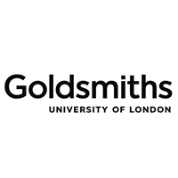
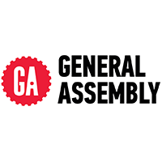
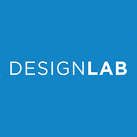
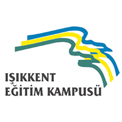
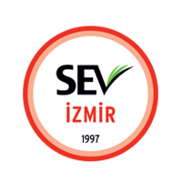
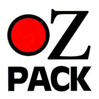
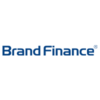
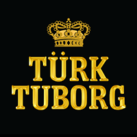

MA Design & Innovation
Goldsmith's University of London
Sep 2016-Sep 2017
London, UK

HTML, CSS, Web Design Circuits
General Assembly

UX: User Interface
Design Lab

Graphic Design Portfolio Course
Central Saint Martins, University of Arts London
Oct 2013-Dec 2013
London, UK
BA Business and Management with Proficiency in French, Class II Division I
University of Exeter
Oct 2010-June 2013
Exeter, UK

Bilingual (English/Turkish) Mathematics and Literature
Isikkent High School
Sep 2006-June 2010
Izmir, Turkey

Primary Education
SEV Primary School
Sep 1998-June 2006
Izmir, Turkey
WORK EXPERIENCE
MA Design & Innovation
Goldsmith's University of London
Sep 2016-Sep 2017
London, UK
HTML, CSS, Web Design Circuits
General Assembly
UX: User Interface
Design Lab
Graphic Design Portfolio Course
Central Saint Martins, University of Arts London
Oct 2013-Dec 2013
London, UK
BA Business and Management with Proficiency in French, Class II Division I
University of Exeter
Oct 2010-June 2013
Exeter, UK
Bilingual (English/Turkish) Mathematics and Literature
Isikkent High School
Sep 2006-June 2010
Izmir, Turkey
Primary Education
SEV Primary School
Sep 1998-June 2006
Izmir, Turkey

Designer
Ozpack
Aug 2011 - Present
Izmir, TR
Founder of Ozpack wanted to purchase a design that I made expressing that he liked my style and wanted me to design more. Being the first designer to design Ozpacks, 4 of my design were out on sale right away in Izmir, displaying my logo. 4,000 of my designs were sold until today and have been gaining 3% commision on each sale

Marketing Manager
Brand Finance
Oct 2014-June 2016
London, UK
Marketing
Brand Refresh and Website Developement: Helped to manage the developement of our new corporate visual identity and the complete re-design of our website. Participated in meetings with the senior management and the designer in order to work on the new logo, and brand guidelines. Created wireframes and contributed to content developement. Guided the designer to come up with relevant materials for the brand guidelines. Assisted international offices about the use of the new brand guidelines.
E-Mail Marketing for League Table Releases: Managed the email marketing for releases of 10 country tables. Organised contact lists and in order to carefully manage relationships between offices, identified which brands the UK office, and which brands the International offices should contact. Gave responsibilities to sector heads to contact the brands which are of higher importance (i.e. prospect, client, ex-client) and undertook the rest of the mass mailout using an email marketing tool.
Client Work & Business Development
100 Most Valuable Turkish Brands - Report/E-Mail Marketing/Meetings: Advised analysts to amend the brand valuations in the Turkey 100 league table. Created the Turkey 100 report 2015 and improved it comprehensively in comparison to the 2014 report with the new design and by including articles and sector specific summaries. Managed the e-mail marketing for the release; two mailshots in total, sent to 194 contacts (40 IR, 82 CFO, 72 CMO) generated 27 replies. The second mailshot offered the opportunity for a meeting, and 17 of those replies requested to meet. I undertook 6 meetings on my own in 2 days and gave 11 leads to our Turkish director. 2 proposals were generated as a result of my meetings.
Brand Consultant - Global Airline Brand: Worked on a brand valuation project which aimed to help the company understand how each department can contribute to the overall brand value KPI. My role was to manage the process of mapping the brand value drivers to departments.
Brand Consultant - FMCG Brand: Working on a strategy project for market entry of a company with a large product portfolio. The aim is to identify the set of products suitable to expand in the UK market. The steps consists of market overview, target audience determination, product, price, and distribution strategy. My role is to manage the project and complete the day-to-day tasks with direction from our Insights Director. 3rd party companies are also involved to assist with market research.
Events
Organised multiple events (with apx. 60 attendees) such as; Banking Forum, Transfer Pricing Forum, Drinks Forum, Nation Brands Forum to publicise the company brand and create new business opportunities. Also succesfully organised and managed the Global Forum; 130 people black-tie VIP dinner and 200 people conference.

Management Trainee
Dentsu Singapore
Jan 2014-Mar 2014
Singapore
Researched the digital media landscape of global camera brands, while working on the Canon account, and gave recommendations on how to exploit this medium effectively. Also introduced the 70:20:10 investment plan and gave ideas on how they can integrate digital to their marketing.
Worked on planning and executing the ‘Spot the Pixma Dino’ contest as part of Canon’s sponsorship for Dinasour Exhibition at ArtScience Museum.
Helped with developing the Phase 2 of ‘Make Art Take Part’ campaign, aimed at increasing the habit of printing. Also helped to generate ideas about how to increase engagement and submissions for the contest.

Corporate Business Development Intern
blur Group
Worked on various projects aimed at driving more sales leads and completed a video presentation showing the marketing trends in 2013, and giving examples for each trend, aimed at increasing awareness and identifying new solutions for customers. Worked on a graphic illustration of the 80:20 Pareto rule, explaining how blur can solve the problems of the companies that are dealing with the long tail of suppliers, and provide cost savings, in order to create a message suitable to convey it to a purchasing manager.

Marketing Intern - Career Express Zip Programme
Coca-Cola Company
Worked on a real-world marketing project for the Turkey Business Unit at the 2012 Career Express Zip programme. Conducted the necessary research, and executed brainstorming sessions with our team in order to come up with various recommendations for the issue. Later, presented this project to senior Coca-Cola executives in a creative way. I have produced a video introduction and illustrated the presentation in Prezi to make it more appealing to the audience.

New Product Proposal/Development - Thesis
Yasar Holding Food and Beverage Group
Jan 2012-May 2013
Exeter, UK - Izmir, TR
Realized a new product opportunity in the Turkish Dairy Market. Developed my proposal and presented to the company. After doing their own research on possibility of launching the product in Turkey, they have decided that it was a profitable product. Completed my Business Project report on this proposal, and presented a 12,000-word report on how to introduce this new product in Turkish Market and my own marketing strategies in contrast with the real implications by the company itself.

Marketing Intern
Turk Tuborg
June 2011-Jul 2011
Izmir, TR
Trade Marketing: Learned how the products and POP materials are used in different sales channels, and their interaction with customers. Presented a project on constructing an ideal website to reach consumers in an effective and efficient manner by observing and analysing websites of well known brands.
Brand Marketing: Presented a project on presenting on expressing the importance of Social Media and observing the implications that the other beer brands have accomplished in this field.

Student Member of The Year Award
Institute of Directors
Go to link
"Selin was one of our very first student members at the Institute of Directors. She was dedicated to enhancing the student membership experience at the University of Exeter and helped to found one of the very first student steering committees. The purpose of the committee was to encourage engagement and put on a series of events for fellow student members.
Selin entered our very first IoD Student Member of the Year Award, which was a new addition to the IoD's Director of the Year Awards this year. I am delighted to say that Selin deservedly won the award. The judges commented 'Selin impressed with her creativity, confidence and ability to work on her own initiative as well as contributing to team activities. She demonstrated that she has good analytical skills, generates ideas, and produces innovative solutions. She is committed to further study and gaining experience to help develop her potential and, with her spirit of enterprise, should have a successful future in business.'" Rebecca Sharpe, IoD

One of 31 Inspirational Women celebrated
by University of Exeter
Go to link
A global day celebrating the economic, political and social achievements of women past, present and future.
Selin distinguished herself whilst she was in her final year at the University by winning the Institute of Directors (IoD) accolade of ‘Student Member of the Year’, receiving the award at its London headquarters...
“Never stop saying ‘yes’ to new opportunities for the merit of the experience alone, even if it initially seems time consuming or intimidating. In order to learn to fly, one must first jump from a ledge. You will be surprised how much every little effort shapes both you and your future." Selin Yigitbasi